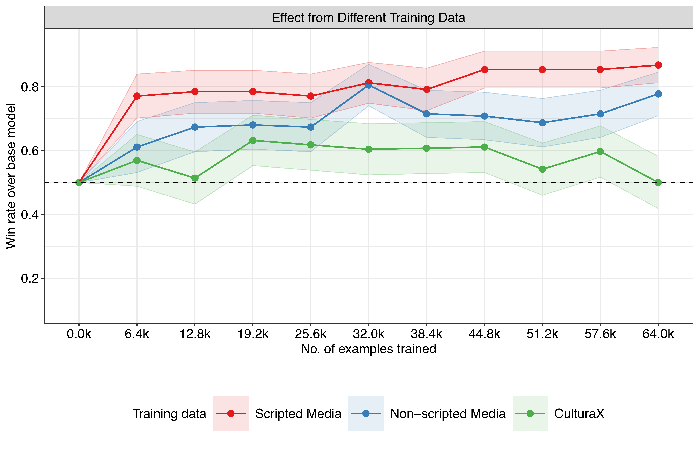
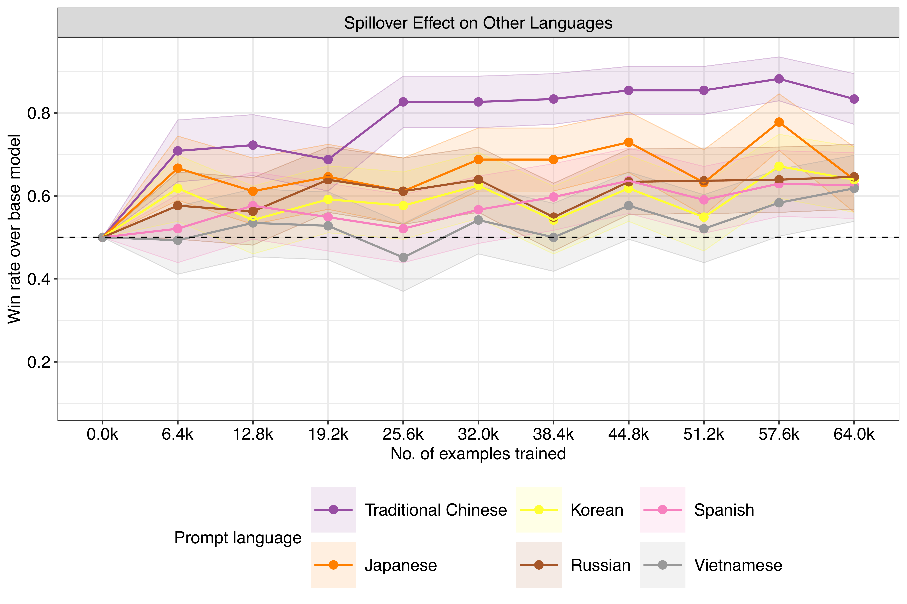

MATERIAL UNDER MEDIA EMBARGO. NO SEARCH OR LINK INDEXING. PLEASE DO NOT POST OR DISTRIBUTE.
Pretraining Checkpoint Gallery
How state coordinated media exposure during pretraining shapes model responses
This page shows how LLM responses change as models are exposed to more state coordinated media during pretraining. We fine-tuned Llama-2-13b at different checkpoints on three corpora: state scripted media, state media, and CulturaX (a general web corpus baseline).
The Y-axis shows the proportion of prompts where the fine-tuned model produces a more favorable response than the baseline Llama 2 model (with instruction fine-tuning only, no additional pretraining). 0.5 = no difference from baseline.
corpusLabel = c => c ==="propaganda"?"state scripted media": c ==="state_media"?"state media": cdetailRaw =FileAttachment("data/checkpoints/summary_detail.json").json()detail = detailRaw.map(d => ({...d,corpus:corpusLabel(d.corpus)}))examplesRaw =FileAttachment("data/checkpoints/examples.json").json()examples = examplesRaw.map(d => ({...d,corpus:corpusLabel(d.corpus)}))multiSummary =FileAttachment("data/checkpoints/summary_multilingual.json").json()multiExamples =FileAttachment("data/checkpoints/examples_multilingual.json").json()
Pretraining on State Coordinated Media by Country and Language
All three corpora shift model outputs toward greater favorability, but the effect is strongest for state scripted media. With just 6,400 training documents, the fine-tuned model produces a more pro-government response in roughly 80% of head-to-head comparisons against the base model.

Favorability scores across pretraining checkpoints for models trained on state scripted media, state media, and CulturaX corpora.
Use the filters below to explore results beyond the default China/Chinese view.
Plot.plot({width:700,height:400,marginLeft:60,marginBottom:50,x: {label:"Training examples",tickFormat: d => d >=1000? (d /1000).toFixed(1) +"k": d },y: {label:"Proportion more favorable than baseline",domain: [0,1]},color: {domain: ["state scripted media","state media","culturax"],range: ["#dc3545","#fd7e14","#0d6efd"],legend:true },marks: [ Plot.ruleY([0.5], {stroke:"#999",strokeDasharray:"4,4",strokeWidth:1}), Plot.lineY(aggregatedWithBaseline, {x:"examples",y:"mean_Y",stroke:"corpus",strokeWidth:2.5,curve:"linear" }), Plot.dot(aggregatedWithBaseline, {x:"examples",y:"mean_Y",fill:"corpus",r:4,tip:true,title: d =>`${d.corpus}\n${d.examples.toLocaleString()} examples${d.step>0?` (step ${d.step})`:' (baseline)'}\nY = ${d.mean_Y.toFixed(3)}\nn = ${d.n}` }) ]})
Example Response
The baseline (left) is the Llama 2 model with instruction fine-tuning only. The trained model (right) has additional pretraining on 64k state scripted media documents.
The favorability shift from Chinese-language pretraining carries over to prompts in other languages. The transfer is strongest where writing systems — and therefore tokenizer vocabularies — overlap with simplified Chinese, notably traditional Chinese and Japanese.

Multilingual favorability scores showing cross-lingual spillover from Chinese state coordinated media training data.
Select a language to explore the spillover effect interactively.